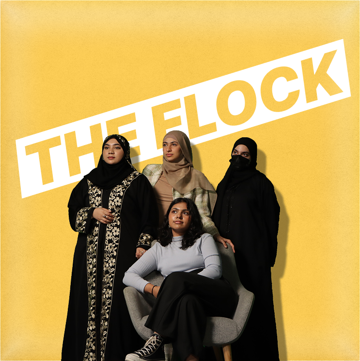

The Duck Collective
What's On brought a real brief into our marketing capstone: their current target audience were aging out of the demographic range of 25 - 34 years old, and our objective was to adapt the brand experience to the Gen Z readership growing into that range. Our group was selected out of the class to present a repositioning strategy directly to What's On's own boardroom, earning a Certificate of Excellence from the university.
Situational and competitive analysis along with primary research into how Gen Z discovers and consumes lifestyle content shaped a repositioning from a broad, credibility-first magazine towards a faster, digital-first platform. The proposal included a redesigned website, a physical mini-magazine format distributed through everyday Gen Z spaces like cafés and gyms, voucher-led promotions, influencer partnerships, and a supporting 12-month media rollout.
I led the primary research and used it to redesign the website. The existing website was built curating to a previous audience's expectations: dense, saturated, all information at once. Gen Z's expectation is closer to a short-form content feed: the absolute minimum effort exerted to find the next thing. An interface that takes more than a few seconds to orient yourself in is one users will abandon instantly. So I restructured the site into clearly bounded, visually categoried secions - cutting the thinking time down to almost nothing.
